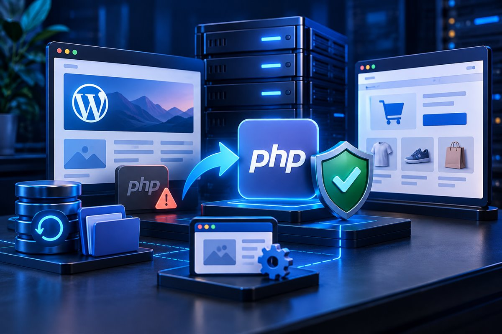

WordPress security
Critical PHP Security Update: What WordPress Site Owners Should Do
Two critical PHP vulnerabilities were patched in October 2026. Here is how to check your server, understand the real risk and update a WordPress or WooCommerce site safely.

Quick answer: Check the PHP version used by your web server and confirm with your host that it includes the 21 October 2026 security fixes. The patched upstream releases are PHP 8.2.35, 8.3.36, 8.4.27 and 8.5.12. Updating WordPress, WooCommerce or plugins alone does not patch the PHP runtime. Back up the site and test compatibility on staging before changing the production version.
What happened in the October 2026 PHP security release?
On 21 October 2026, the PHP project released fixes for two critical vulnerabilities that could allow unauthenticated remote code execution in affected PHP installations. The PHP project advised users to update immediately. WordPress and WooCommerce published their own notices because both platforms run on PHP.
This is a server-runtime issue, not a vulnerability in WordPress core or WooCommerce. That distinction matters. A normal WordPress plugin update will not replace the PHP version installed by a hosting provider.
The official patched releases are PHP 8.2.35, PHP 8.3.36, PHP 8.4.27 and PHP 8.5.12. A host may also provide a vendor-maintained package or backported patch, so ask for confirmation rather than judging safety from the displayed version number alone.
An older version number is a reason to investigate. It is not proof that a website has been attacked or compromised. Confirm the server package, review hosting notices and check logs if there is a specific concern.
How do I check the PHP version in WordPress?
- Open Site Health. In the WordPress dashboard, go to Tools, then Site Health.
- Open the Info tab. Expand the Server section and find the PHP version field.
- Check the hosting panel. cPanel, Plesk and managed hosting dashboards often show the active PHP version too.
- Ask the host about the security patch. If the number is unclear or managed by the provider, request written confirmation that the October 2026 PHP security fixes are applied.
WooCommerce store owners can also go to WooCommerce, then Status, and look under Server environment. Record the PHP version before making changes so you have a clear rollback reference.
Which PHP version should a WordPress site use?
| PHP branch | Upstream status | Practical action |
|---|---|---|
| 8.5 | Actively supported | Use 8.5.12 or a confirmed patched host package, after compatibility testing. |
| 8.4 | Actively supported | Use 8.4.27 or a confirmed patched host package. |
| 8.3 | Security support | Use 8.3.36 or a confirmed patched host package. WooCommerce recommends PHP 8.3 or newer. |
| 8.2 | Security support ends 31 December 2026 | Use 8.2.35 only as a short-term supported path, then plan the next upgrade. |
| 8.1 or older | End of upstream support | Plan a tested move to a supported branch. A host may backport fixes, but that support must be verified. |
Version support dates come from the PHP project. Hosting vendors sometimes maintain packages differently, which is why the right question is whether the installed package contains the security fix.
How do you update PHP without breaking WordPress?
The PHP switch itself may take only a few clicks. The important work happens before and after it. Old plugins, abandoned themes and custom code can depend on behavior that changed in newer PHP versions.
- Confirm who controls PHP. On shared or managed hosting, the provider may already have patched the server. On a VPS or dedicated server, responsibility may sit with you or a server administrator.
- Create a restorable backup. Include the database, uploads, themes, plugins and server configuration. A backup is useful only if you know how to restore it.
- Update the application layer. Bring WordPress core, actively maintained plugins and the theme to compatible releases before the PHP change.
- Clone the site to staging. Test the exact target PHP branch with a recent copy of the production website.
- Review logs, not only screens. Check PHP errors, WordPress debug logs, failed scheduled actions and browser-console errors.
- Test the business journeys. Submit forms, sign in, search, upload media and exercise any custom post types or API integrations.
- Plan the production window. Choose a low-traffic period, keep rollback access ready and avoid changing unrelated systems at the same time.
- Verify after the switch. Clear caches, confirm the active PHP version and repeat the critical tests on production.
A compatibility scanner can help identify suspicious code, but it cannot prove that every runtime path works. Real staging tests remain necessary.
What should WooCommerce stores test after a PHP update?
A store needs a wider test than a brochure website because a small server-side failure can interrupt revenue, fulfilment or customer communication.
- Add simple and variable products to the cart.
- Test guest and account-based checkout.
- Run test transactions for each active payment gateway.
- Confirm shipping rates, tax calculations and coupon rules.
- Check order emails and status changes.
- Review webhooks, API integrations and scheduled actions.
- Test subscriptions, bookings or memberships if the store uses them.
- Review server logs after the tests, even when the storefront looks correct.
WooCommerce 11.6 changes the minimum PHP requirement
WooCommerce 11.6 is planned for February 2027 and will require PHP 8.1 or newer. WooCommerce currently recommends PHP 8.3 or newer for an updated hosting environment. PHP 8.1 satisfies the planned WooCommerce minimum, but it has already reached the end of upstream PHP security support. For a new upgrade plan, a supported branch that works with the site is the more sensible target.
Stores using PHP 7.4 or 8.0 can remain on WooCommerce 11.5 temporarily while resolving hosting or extension constraints. That should be treated as transition time, not a long-term security plan.
Common questions about the WordPress PHP security update
Does updating WordPress fix the PHP vulnerabilities?
No. WordPress runs on PHP, but PHP is installed at the server level. Your host or server administrator must apply the relevant PHP package update.
Has my WordPress site already been hacked?
The advisory does not prove that any individual site was compromised. If you have suspicious activity, unexplained files, unfamiliar administrators or server alerts, preserve evidence and arrange a focused security investigation.
Can I update PHP directly on a live site?
You can, but it creates avoidable risk. A staging test gives you time to find theme, plugin and custom-code incompatibilities before customers encounter them.
Should I choose PHP 8.5 because it is newest?
Not automatically. Use a currently supported and patched branch that your host, WordPress stack and business-critical extensions support. WooCommerce recommends PHP 8.3 or newer, but the exact target should be tested against the specific site.
What if my hosting company cannot update PHP?
Ask for the provider's patch status and migration options. If it cannot supply a supported or securely maintained environment, plan a controlled move to suitable hosting. Export backups and document DNS, email, cron jobs and integrations before migrating.
A calm response is better than a rushed one
The right response is prompt, but it should still be controlled. Confirm the server status, create a usable backup, test the target version and verify the website's real workflows. That is more reliable than installing random security plugins or changing several systems at once.
If your site also needs a broader technical review, see my WordPress performance audit process, WordPress development service and WooCommerce development service.
Official sources
Confirm that your server includes the October 2026 PHP fixes. If a version change is required, back up first, test on staging, verify every critical workflow and keep a rollback path ready.